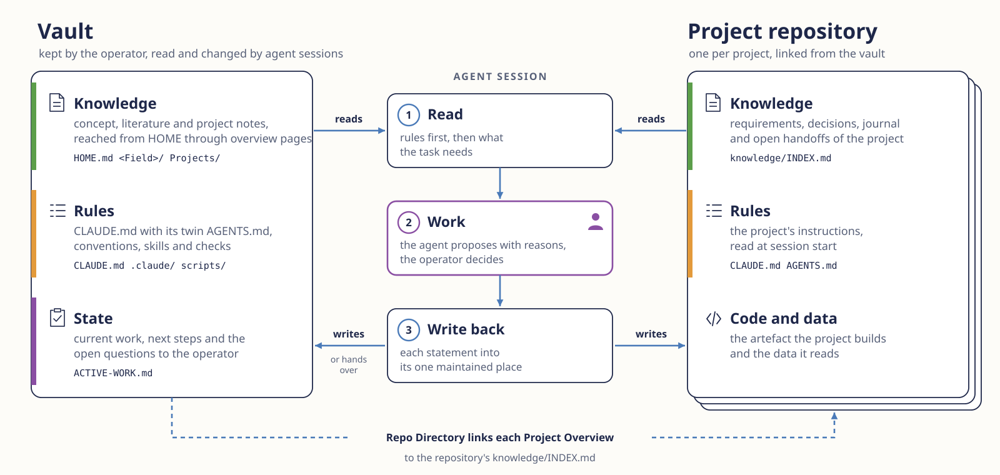

Second Brain Vault
A template for an Obsidian vault that a person keeps together with an AI agent. Written rules say where knowledge belongs and how it may change, and the person decides what is accepted.

The vault is a folder of linked Markdown notes that the operator, the person who keeps it, maintains with an AI agent in Obsidian. Its knowledge consists of concept, literature and project notes, each statement in one place and reachable from HOME.md. Its rules begin with CLAUDE.md and the generated AGENTS.md, and go on in conventions, skills for recurring work and checks that refuse a commit breaking a hard rule. Its state is ACTIVE-WORK.md, the one place for current work and the open questions to the operator.
An agent session reads the rules first and then what the task needs, works by proposing with reasons while the operator decides, and curates. Curating keeps accepted knowledge in the one place where it applies, corrects or removes statements that have become outdated, and leaves what holds for one project in that project. A project repository keeps its own knowledge in the folder knowledge/, entered through knowledge/INDEX.md as Promptotyping describes, and the Repo Directory links each Project Overview of the vault to it. A session in a repository reads the vault without writing to it and hands a finding for the vault over, which a vault session enters once it is accepted.
The template abstracts the structure of the author's own research vault and contains only synthetic notes. The manuscript Second Brain as a Personal Research Environment for Working with AI Agents develops the approach, Research Mission Control coordinates several such sessions, and Grounded Vault traces claims to an exact source passage.
Reuse
Needed are Obsidian, Claude Code or Codex with a paid plan or account, Git and Python 3.11 or newer.
Clone, build and check. It ends with hard: 0 and measured: 0. git clone https://github.com/chpollin/second-brain-vault.git my-vault cd my-vault python scripts/build_site.py python scripts/build_explorer.py python scripts/check_vault.pySwitch on the commit check. git config core.hooksPath scripts/hooks- Open the folder in Obsidian as a vault and start the agent there.
- Adapt field, project and CLAUDE.md as the README describes.
A photo archive in seven prompts
The prompts run in the clone from Reuse on the invented sources of a photo archive in docs/example, whose notes are the reference.
Orient Read HOME and CLAUDE and tell me in ten lines how this vault is organised.A ten-line map of the vault.
Bring in sources Copy the folder docs/example/Sources into this vault as Sources/. These are converted sources of a fictional photo archive, so do not change their text. Then run python scripts/build_site.py and python scripts/check_vault.py and show me the findings.Four sources and a report with two unregistered tags and four notes unreachable from HOME.
Agree the structure This vault will serve a team with two projects, Photo Archive and Oral History Collection, and one field, Data Management. Ask me up to three questions about gaps, then propose folders, Project Overviews and the tags to register. Create nothing yet.Questions and a proposal to accept or change.
Build it Create the agreed structure with the folder Data Management and an overview page that lists the sources, the two Project Overviews under Projects/ with their entries in ACTIVE-WORK, and the tags data-management and source in TAG-TAXONOMY.md. Make every new note reachable from HOME. Run both scripts again and commit when the check reports hard: 0.The structure, a clean check and a commit that the commit check lets through.
Write notes With the skill vault-knowledge, turn Sources/Scan Protocol 2025.md and Sources/Project Report Photo Archive 2025.md into concept notes in Data Management, one per concept, each linked to its sources and to the Photo Archive overview. Show me the list before writing.Notes such as Archival Master. The check lists them with fewer than three sources, as a work list that blocks nothing.
Decide with reasons Which file format should the Photo Archive keep its masters in? First look for what the vault already holds on this. Then propose a decision note with decision, grounds, rejected alternative and conditions, cite the notes it rests on and mark every ground the vault does not support. Do not file it before I accept.A proposal for uncompressed TIFF with its grounds, to compare with the reference decision view.
Accept and reuse I accept the decision note. File it in Data Management and link it from the Photo Archive overview. The Oral History Collection then asks which format its audio masters should have. Find the decision, check whether its conditions hold, and say what it can and cannot settle.The filed decision and a comparison. It covers still images only, so audio needs its own decision.
Limits, licence and citation
- The checks show consistency. Benefit in everyday research is not yet studied.
- The agent sends requests and the files it reads to its provider. GitHub Pages would publish the full text, so it stays off for a personal vault.
- Text and documentation CC BY 4.0, code MIT, the shared DHCraft web files MIT, the DHCraft logo excluded, as the licence states.
Pollin, C. (2026). Second Brain Vault [Obsidian vault template]. https://github.com/chpollin/second-brain-vault